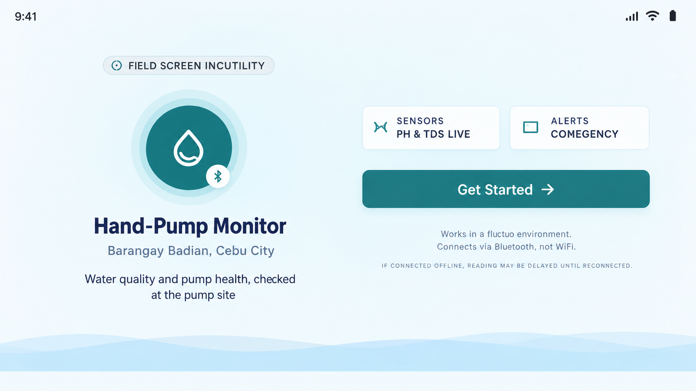

01
developer_board

CAPSTONE PROJECT - IoT
IoT Hand-Pump Monitoring System
Building IoT that monitors groundwawater quality and detects early hand pump wear at community well
MY CONTRIBUTION:
Frontend architecture and UI design
PROJECT:
In Progress
arrow_forward
STATUS 50%